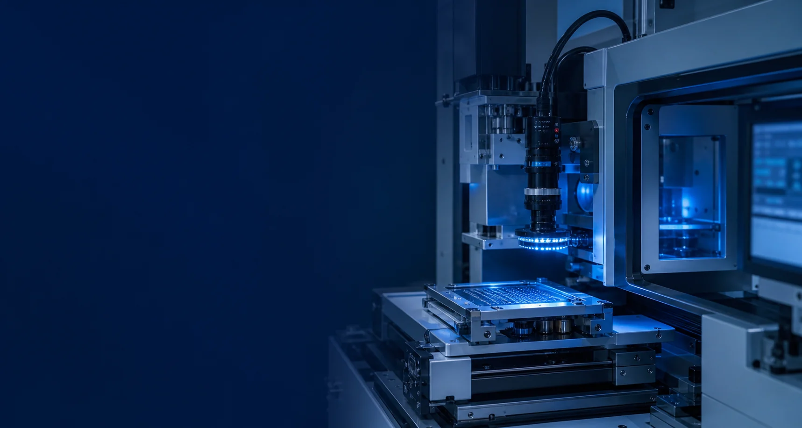

다채널 실시간 녹화Multi-channel Recording
여러 영상 입력을 프로젝트 환경에 맞춰 수집하고 안정적인 녹화 흐름으로 구성합니다.
Capture multiple video inputs and organize them into a dependable recording workflow.

PLAYERS · VIDEO RECORDING & REPLAY
실시간 다채널 영상 녹화부터 동기 재생, 프레임 단위 탐색과 판독까지.
현장의 입출력 환경과 운영 절차에 맞춰 하나의 소프트웨어로 구성합니다.
From real-time multi-channel recording to synchronized replay and frame-level review,
Players is configured around each site's media I/O and operator workflow.
BUILT FROM DELIVERED EXPERIENCE
Players는 관련 시스템 개발·납품 2건의 경험을 기반으로 합니다. 입력 장치, 녹화 방식, 동기 기준과 판독 절차가 서로 다른 현장에 맞춰 영상의 수집부터 재생과 운영 화면까지 통합합니다.
Players builds on two delivered systems. It brings capture, recording, synchronization, replay, and operator workflow together for sites with different media inputs and review requirements.
CORE CAPABILITIES
여러 영상 입력을 프로젝트 환경에 맞춰 수집하고 안정적인 녹화 흐름으로 구성합니다.
Capture multiple video inputs and organize them into a dependable recording workflow.
같은 시점의 여러 채널을 함께 탐색하고 재생해 사건과 동작의 전후 관계를 확인합니다.
Navigate and replay multiple channels on a shared timeline to examine events in context.
필요한 구간을 빠르게 찾고 프레임 단위로 이동하며 중요한 순간을 정밀하게 확인합니다.
Find target segments quickly and inspect critical moments with frame-level navigation.
장비 구성과 운영 절차에 맞춰 녹화, 검색, 재생과 판독 화면을 하나로 연결합니다.
Connect recording, search, replay, and review around the site's equipment and workflow.
SYSTEM FLOW
정해진 제품 구성을 일방적으로 적용하지 않고, 실제 입출력 장치와 운영 목적에 맞춰 필요한 소프트웨어 범위를 설계합니다.
Instead of imposing a fixed setup, we shape the software around actual media devices and the required operating process.
DEMO SYSTEM
실제 영상 입출력 장치와 전용 운영 화면을 연결해 녹화, 검색, 동기 재생과 프레임 판독 흐름을 직접 확인할 수 있도록 구성할 예정입니다. 완성 후 장비 사진과 데모 영상을 이 페이지에 공개합니다.
The demo will connect real media I/O devices with a dedicated operator interface for recording, search, synchronized replay, and frame review. Equipment photos and a demonstration video will be published here after completion.
데모 장비 준비 중Demo system in preparationPROJECT INQUIRY
입력 채널, 영상 규격, 녹화 기간과 필요한 재생·판독 방식을 알려주세요.
Tell us about your input channels, media format, retention needs, and review workflow.